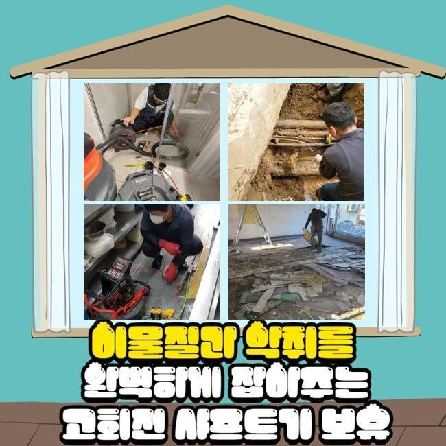
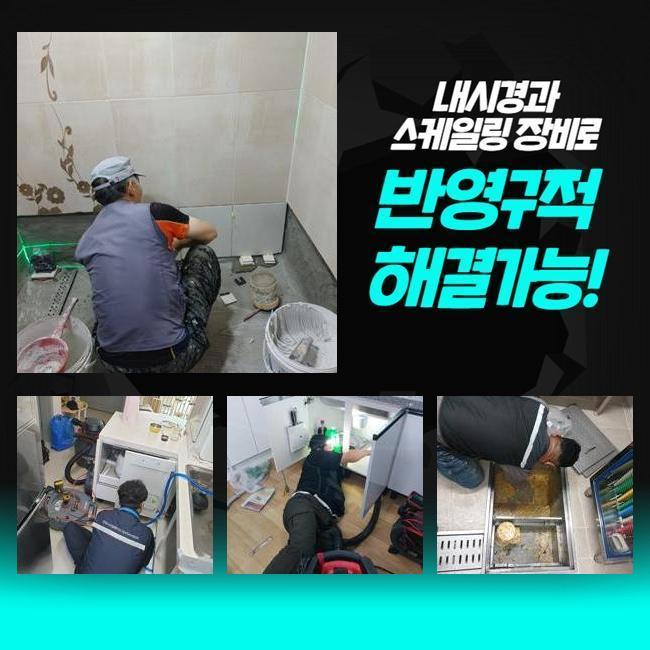
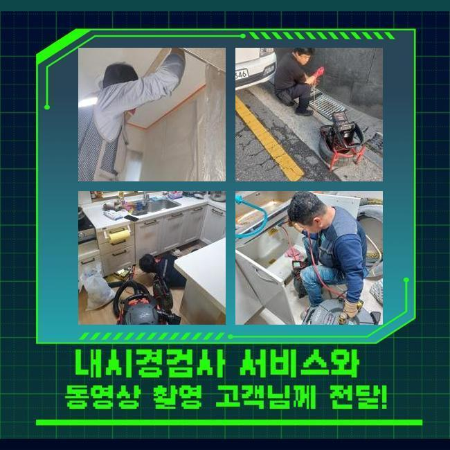
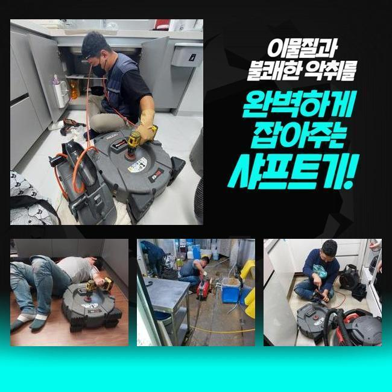
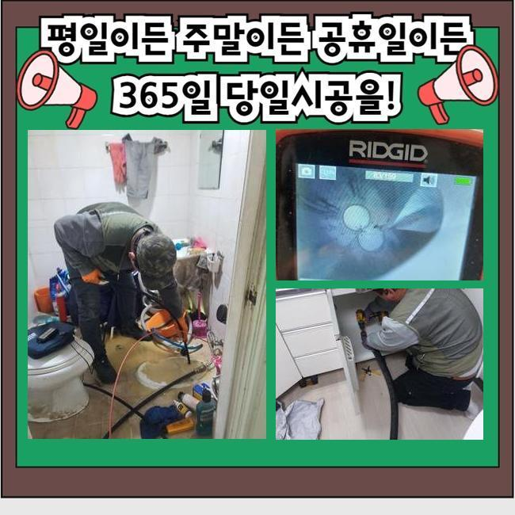
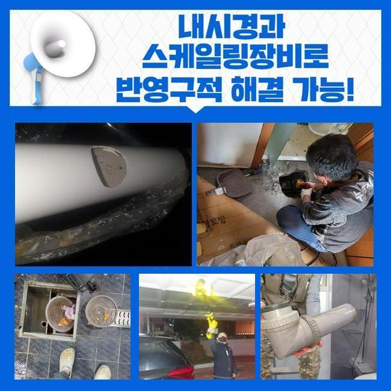
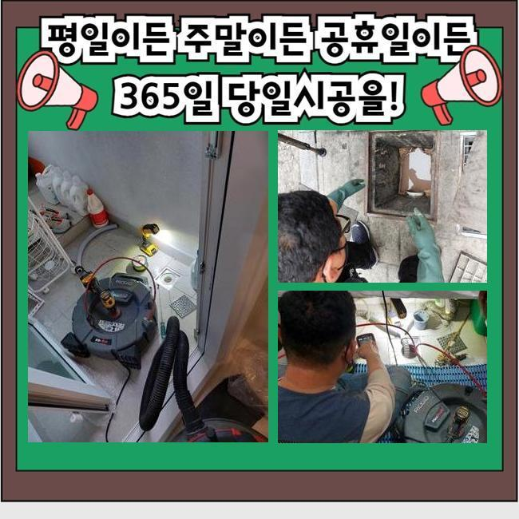

🏠 동작구 동작동대변기뚫음 사당동 배수로뚫기 누수탐지
용인시 처인구 배관막힘 전문 시공 후기

📋 작업 개요
- 위치: 용인시 처인구, 수원시 영통구, 화성시 동탄
- 서비스 유형: 배관막힘, 누수수리, 방수공사, 고압세척, 내시경점검
- 작업 일시:
- 업체명: 하수구수사대 (010-5615-2118)
🔍 문제 상황
동작구 동작동대변기뚫음 사당동 배수로뚫기 누수탐지
다수가 사용하는 일반 건물의 경우 느닷없이 관로가 막혀버리면 당혹스러운 사태가 발생됩니다
이에 되는대로 해당 경험이 적은 수리업체를 찾을때가 많아요
통상 하수관에 연계된 전문지식이 없다해도 다소간 처치는 해나갈 거라고 여기는 경향이 강해요
그리고 돈도 절약이 가능하다고 여기실수도 있죠
하지만 이런 문제에는 제대로된 장비와 테크닉을 보유한 곳을 선택하여야 여러가지 변수를 감할수가 있죠
금주에 내방한 위치는 중앙 파이프의 고장으로 가쁘게 연락을 주셨답니다
알려주신 주소로 찾아갔고 설비쪽 담당하시는 팀장님이 기계실의 배수관 시설물 공간을 안내해주셔서 내측 상황을 확인하였죠
여러인원이 쓰는 아파트는 틈틈이 신경을 써줘야만 갑작스런 문제들이 생겨나지 않는답니다
소수의 인원이라도 막힘을 촉발하는 행위를 하면 연쇄적으로 공용문제로 이어지기도 해서죠
따라서 현관이나 복도 등에 고장을 촉발시키는 행동들을 삼가달라는 공지를 정기적으로 실시하는게 바람직하다고 볼수 있어요
파이프가 정체를 이루는 까닭은 많아요
단단해진 잔재들로 인한 것이나 공사과정에서 발생되기도 해요
해당 내용은 추측말고 관측으로 파악할수 있어요

🔎 원인 분석
💡 전문가 진단: 정밀 진단 장비를 사용하여 슬러지의 고착 여부를 판명하고 타격/세척 작업을 실시했습니다.
일단 내시경cctv를 통해 중앙관로를 탐지하며 상태를 확인해 나갔죠
이때문에 아침 몇시간은 잠시 수도이용을 제한하여서 거주자들의 불편함을 초래하여 되도록이면 조속하게 과정을 마무리지어야 했어요
대부분의 주거인들이 가정내로 들어오는 오후까지는 수리가 마무리되게 신속하게 일을 해나갔어요
보통의 도구로는 해당 배관면의 안쪽을 세세히 살피기 어렵기에 고가장비가 요망돼요
저희들은 여러종의 내시경기기와 하수관수리 도구를 보유중에 있기에 곤란한 사태에도 효율적으로 정리해 나가죠
높은 수압을 활용하여 초벌로 세정한후 재차 들여다보았더니 배수관 안의 정체는 이렇다하게 보이지는 않았죠
배관 중간중간에 침전물들이 다소 나타났으나 그것으로 막힌건 아니었다고 판단했어요
비전문가가 파악했다면 이렇게까지만 고지하고 가버렸을 가망성이 높답니다
그렇지만 저희팀은 전체 상황을 검토하여 시공을 시행하고 있답니다
건물 내의 배관보단 밖의 오물통 부근에 문제점이 상존할 여지가 높을거라 예상했답니다
관리팀장님에게 내시경기기를 동시에 보여드린뒤 설명하였죠
건축물 안의 공용관로보다는 외부공간을 살피려 고지한 뒤에 즉시 세척과정을 속행했어요
구정물이 그득했다면 흡입기계로 제거한 다음에 본과정에 들어갔겠지만 다행으로 물사용을 멈춰 업무 효율성을 높여서 신속하게 뚫음을 속행하게 되었죠
초음파 탐검을 시행했더니 석회질과 이물이 뒤섞인 모양새를 목견할수 있었어요

🔧 작업 과정
이때문에 관 내부가 좁게 되었어요
샤프트기기를 배관면 깊은지점의 이물들을 처리하기로 구상하였죠
석회물질과 오물들을 토출하게 만들면서 물청소 공구를 작동해서 관청소를 시행하죠
그 성분들이 외부 탱크로 유입되지 않게끔 조심스럽게 작업합니다
보편적으로 고압물세척 공정은 일반인들은 사용하는 상황이 그다지 없답니다
금번 처리한 처소는 공용파이프와 바깥쪽의 배관에서 트러블이 존재하였기에 해당 기기 이용을 선택한거였어요
여러가지 문제에 처하신 분들께서 고수압물청소하는 제목만 확인하시고 저희들에게 전화를 주고 있으신데요
약소한 정체현상에 고수압 기계를 적용하면 부속에 균열을 일으키는 사례도 빈번하여 사용이 올바른가에 관련하여 판단이 일단입니다
해당 정황에는 공사에 소요되는 시간과 비용 등이 커질 가망이 크다는걸 인지하고 있으셔야 해요
한편 시공장소에서 토출된 이물들은 엄격히 구분하여 처리해야죠
그 성분들이 배수된다면 생각지않은 트러블을 촉발할수 있으니 조심스레 처리해야 해요
따라서 마감 정리는 확실히 해나가야 하는거죠
우리팀은 해당하는 총체적인 작업을 순차적으로 진행하고 비관적인 사태를 방지하죠
물세척을 실시하니 주변으로 여러가지 찌꺼기가 토출되었죠
고압 물세척 과정으로 오물들을 내보내고 분리된 성분들은 석션도구로 말끔하게 제거하였죠
석회질과 동반된 오물이 배출되는 것을 확인하였고 정기적으로 관리를 하지않은 결과물이었다고 판단되었어요
시기에 맞게 우리팀이 이동한 작업차가 방수작업이 되었기에 수분이 가득찬 이물들도 신속히 처리가 가능했죠
다수가 이용하는 건축물은 노화되면서 그런 문제들이 빈번해질 수밖에 없어요
요번에 방문을 드린참에 세심한 사용이 요망된다고 말씀드렸어요
집안의 배관에서 하수관으로 흘려보내는 기름슬러지를 줄여야 하며 물에 안녹는 물질은 재활용이나 일반쓰레기 항목으로 구분해서 버려야 한답니다
이것은 통상 인식하고 있긴 하지만 제대로 실천이 안되는 내용이죠
하나의 사례로 변기를 이용하고 물티슈를 투입해버리는 행동 등이 있답니다
수월하게 풀어질것이라 생각하시겠지만 실지는 전혀 안그렇다는걸 강조합니다


✅ 작업 완료
금번에 하수구가 막혀 고초를 경험한 것을 기억하셔서 차후 또다시 문제가 안일어나게끔 세대원들에게 알림을 당부드렸어요
건축물의 소장님에게 우리들의 수리공정을 말씀드리고 청소된 관 내측을 배관카메라로 확인토록 해드렸죠
구체적인 사안을 고지해드리는걸 포함해서 성과를 가감없이 제시해 드리기에 편안함을 드릴수가 있었어요
주변 시설물을 원상태로 복원시켰고 의뢰자께 보고한 뒤에 업무를 완료하였습니다
우리는 공용배관을 포함하여 누수증세 등이 겹쳐서 타 기술자들이 고치지 못한 것들도 앞장서서 고쳐드립니다
증상의 난도에 구애받지 않고 파이프가 고장났다면 고객의 요청에 따라 신속하게 내방드리니 걱정마시고 의뢰하시길 바라요 빠른 해결책을 제시해드릴게요




⚠️ 하수구 배관 막힘 예방 및 관리 가이드
- ✅ 머리카락, 비닐, 물티슈 등 물에 분해되지 않는 이물질은 절대 흘려보내지 마세요.
- ✅ 기름기 많은 식기는 설거지 전 키친타올로 먼저 기름때를 닦아내세요.
- ✅ 주기적으로 배수구에 뜨거운 물을 가득 부어주어 유지방 고착을 방지하세요.
- ✅ 작업 후 1년 이내 재발 시 무상 A/S 보증 서비스를 제공합니다.
💡 핵심 정리
- 확실한 장비 작업(내시경 점검 및 샤프트 스케일링)으로 원인을 뿌리 뽑습니다.
- 작업 후 1년 이내에 동일한 부위 재발 시 100% 무상 A/S 서비스를 보장합니다.
- 서울 · 경기 · 인천 전 지역에 24시간 언제든 긴급 출동할 수 있도록 항시 대기 중입니다.
❓ 자주 묻는 질문 (FAQ)
🚨 용인시 처인구 배관막힘 문제로 고민이신가요?
정확한 원인 진단과 확실한 시공으로 재발 없는 해결을 약속드립니다.
24시간 긴급 출동 | 서울 · 경기 · 인천 전지역 | 1년 내 재발 시 무상 A/S